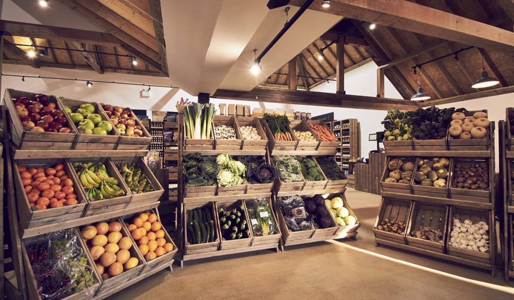
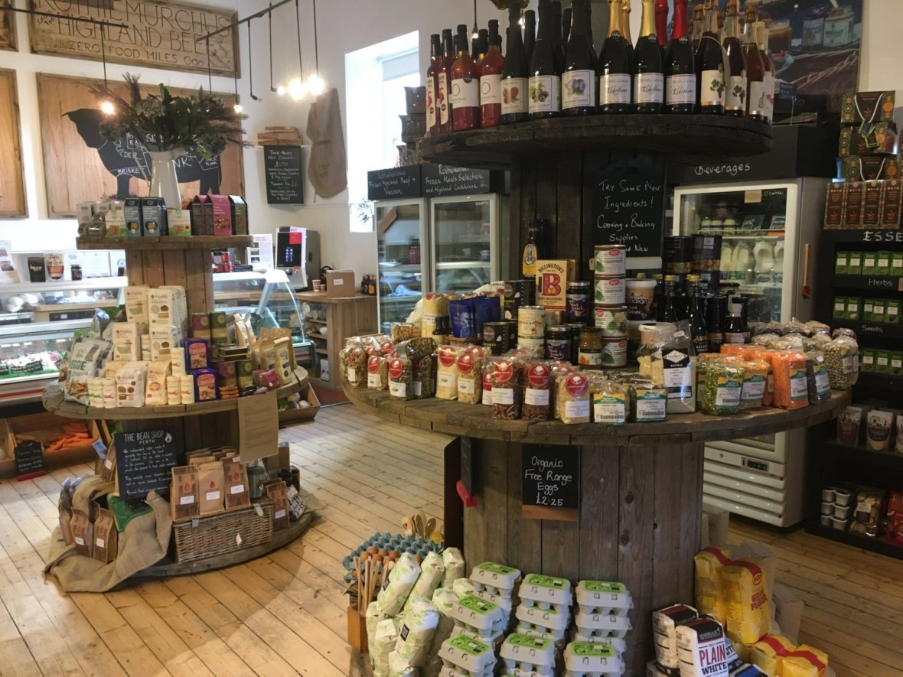

Our Dumfries farmshop offers a variety of fresh, high-quality products directly sourced from nearby farms and artisans.
Our selection includes seasonal fruits and vegetables, grown with care and free from pesticides,
as well as fragrant herbs picked at their peak, which can also be found in our garden area.
You can also find fresh dairy products, such as creamy milk, rich butter, and artisan cheeses.
All made from the milk of local cows, goats.
we sell Free-range eggs, meats from grass-fed livestock, and homemade preserves like jams,
chutneys, and sauces provide a taste of traditional, wholesome cooking


In addition to produce and meats, our shop feature's freshly baked bread, cakes, and pastries, crafted with ingredients from our local grain mill.
we aslo sell locally made honey, jams, and specialty sauces offer a sweet or savory treat, while organic and fair-trade coffee, teas,
and seasonal beverages round out the offerings. Handcrafted candles, soaps, and other artisanal products can also be found in our farmshop,
giving a sense of the region's creativity and craftsmanship.